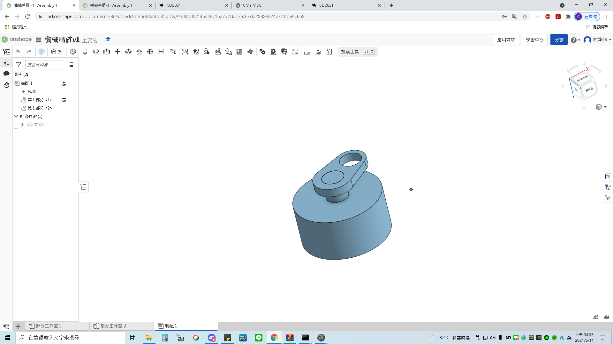
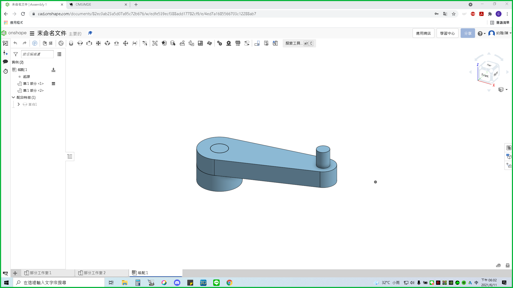
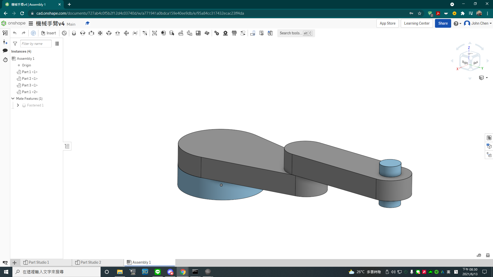
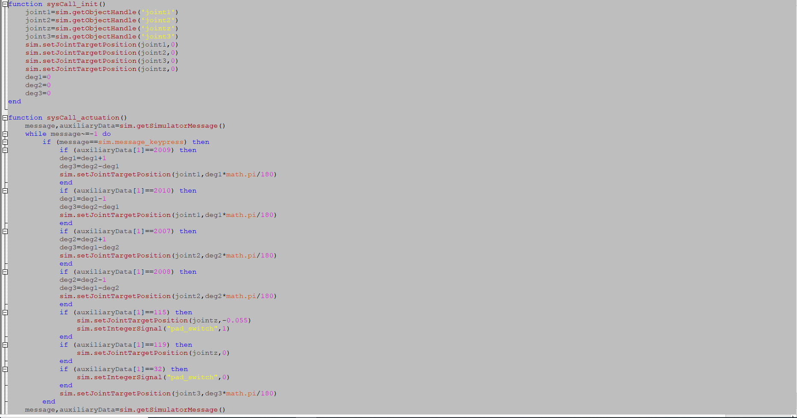
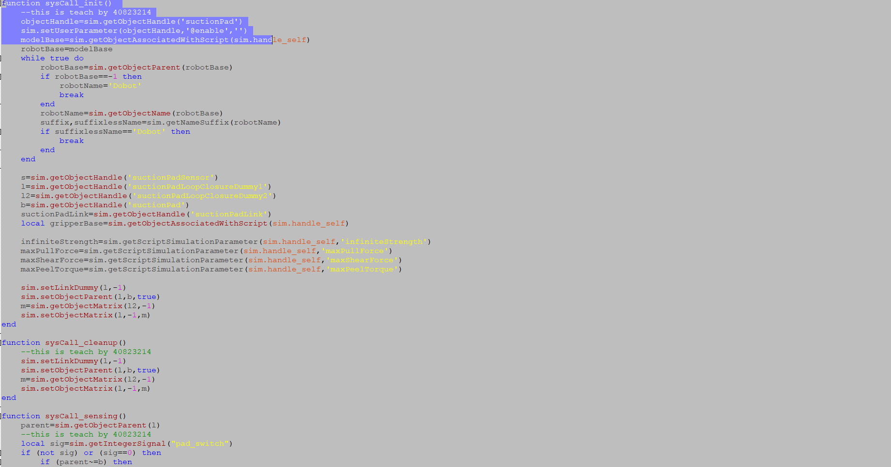
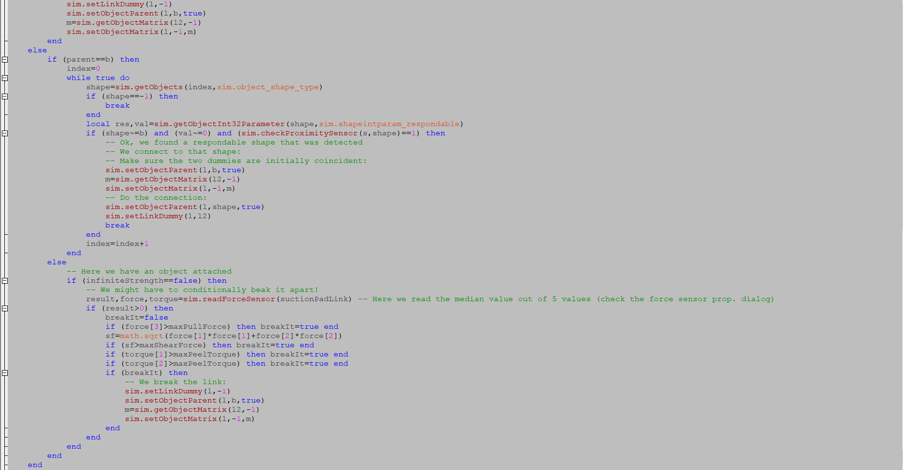
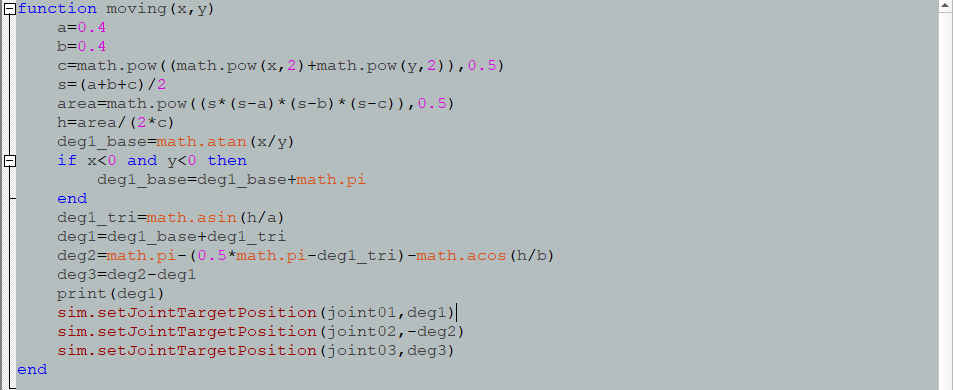
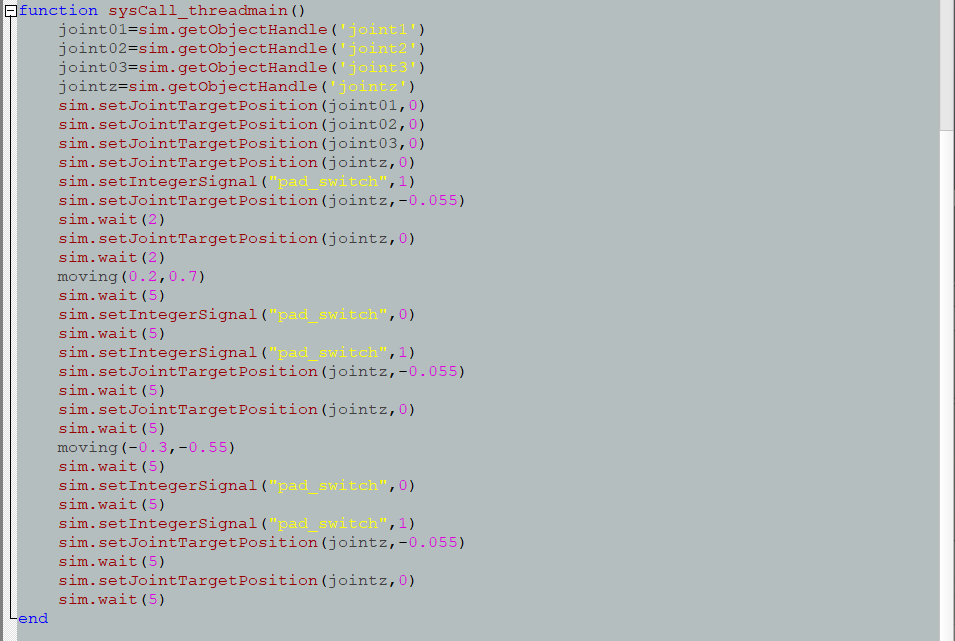
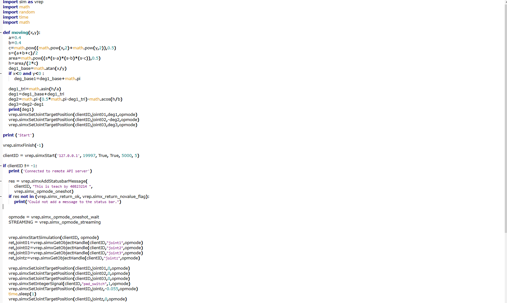
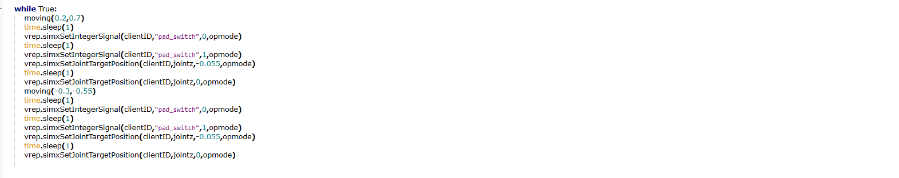

小組討論 <<
Previous Next >> 個人任務
w16 exam
1. Onshape 零組件繪製
on shape連結
Version1:

繪製這張圖的時候，忘記考慮到尺寸問題，所以導致整體比例很怪。
Version2:

這次繪製出來的尺寸偏向正常，但是還會繼續修改。
Version3:

這是最後on shape上傳的版本，下面有附連結。
2.建立 CoppeliaSim 4.1.0 MTB robot 場景
Google Drive連結
coppelaisim檔案
Leo檔案:
(參考老師提供的程式)藉由鍵盤按鍵來控制Robot角度
|
1
2
3
4
5
6
7
8
9
10
11
12
13
14
15
16
17
18
19
20
21
|
if (auxiliaryData[1]==114) then --r right turn in degree
-- if key r pressed axis1 angle adds 5 degrees
rotation1 = rotation1 + 5*deg
sim.setJointPosition(axis1, rotation1)
end -- if r
if (auxiliaryData[1]==108) then --l left turn in degree
-- if key l pressed axis1 angle substract 5 degrees
rotation1 = rotation1 - 5*deg
sim.setJointPosition(axis1, rotation1)
end -- if l
if (auxiliaryData[1]==100) then --d suction pad down
-- if key d pressed axis3 will down 0.01 m plus calibration
distance3 = distance3 + 0.01 + calibration
sim.setJointPosition(axis3, distance3)
end -- if d
if (auxiliaryData[1]==117) then --u suction pad up
-- if key u pressed axis3 will up 0.01 m minus calibration
-- 吸盤往下升 1 公分加上校正值
distance3 = distance3 - 0.01 - calibration
sim.setJointPosition(axis3, distance3)
end -- if u
|
這是用鍵盤控制的程式:

40823214同學有幫助我們一起將程式完成。
3.手臂末端加入 components-gripper-suction pad 吸盤
已經有做過放置吸盤到手臂末端了，而這個影片主要介紹吸盤如何放置與吸盤要從哪裡點出來。
下面有40823214同學提供的吸盤程式:


4.逆向運動學函式
裡面做程式完成後的成果。

這邊是計算程式計算面積和角度的地方。

這邊則是設定各軸的說明與定位，還有將吸盤往下設定多少(每個人都不同需要自己調設)，還有老師所要求的點(0.2,0.7)、(-0.3,-0.55)
我所下降的高度是0.055，對我來說這高度是最剛好的高度，也是吸盤可以吸到的高度。
5.Python remote API 逆向運動學函式
這邊影片對API的操作做個大概，讓大家知道API該怎麼運作。


下面while的部分是可以讓程式重複運作，製作一個迴圈出來，使程式重複運作。
w16 exam心得:
老師這次的小考試是可以對每個人的能力做出一個簡單的判斷，使大家知道自己的能力到哪邊，像是程式部分或是模擬的部分，也可以順邊將整體製作程序讓大家體驗，並訓練大家的能力。
這次的方式跟以往都不同，以前可以跟隊友互相分工合作，每個人都可以挑選自己會擅長的，可是經過這次的w16 exam後，就可以知道只會一項技能是不夠的，所以我相信這是老師要考驗我們其他能力的時候，也是個可以學習別項技能的機會。
這次 林厚宇 同學 40823214她將自己所繪的程式教了我們，使大家都有機會可以學到，順便了解這門課程的核心所在。
這是厚宇同學幫我們所做的直播課程:
小組討論 <<
Previous Next >> 個人任務